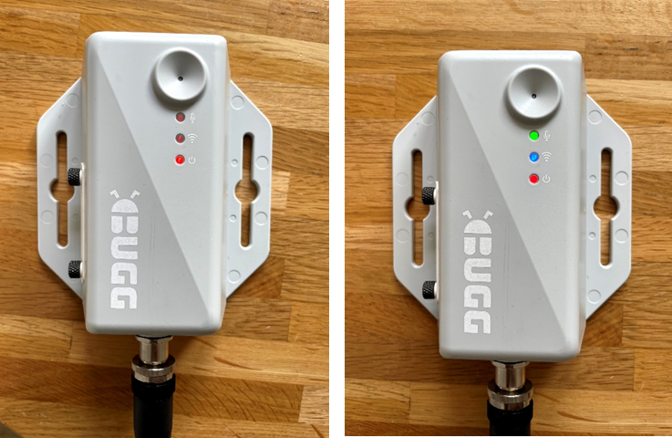

Status LEDs¶
Overview¶
Bugg communicates its status through three RGB LEDs on the front of the device, situated below the microphone. From top to bottom, the LEDs correspond to recording, connectivity, and power, respectively.
When Bugg is booting, the LEDs will turn on sequentially from bottom to top, starting with just the power LED (left image below). It may take minutes for all the recording LED to activate (right panel), so please be patient.

Recording LED¶
The recording LED tells you whether Bugg is recording audio or not.
It can be in two states:
- Green: Recording audio
- Off: Not recording audio
Connectivity LED¶
The connectivity LED tells you whether Bugg is connected to the internet or not.
There are four states:
- Blue: Successfully connected to internet
- Cyan: Data being uploaded
- Red: No internet connection
- Off: Device booting or operating offline mode
On boot, the connectivity LED will often start red as Bugg attempts to establish an internet connection, then turn blue if successful. Please remain patient, as this can occassionally take a few minutes.
Please note, the internet connection is turned off in between uploads to save power, so expect short periods of connectivity in between longer periods without a connection.
Power LED¶
The power LED tells you whether Bugg is connected to a power source. It can be in two states:
- Red: Receiving power
- Off: Not receiving power
LED error state¶
If the device encounters an unexpected error, all three LEDs will flash white together until the device is powered down. When Bugg is in this error state, no data is recorded.
These errors are rare and could indicate faulty hardware, microSD cards, or power connectors. For those with sufficient technical know-how, advanced debugging options are available.